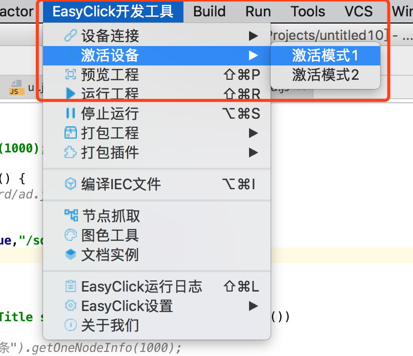
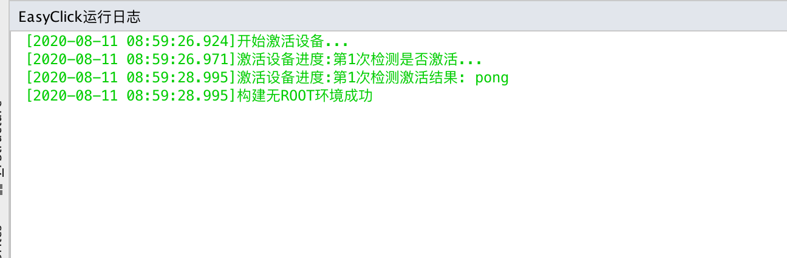
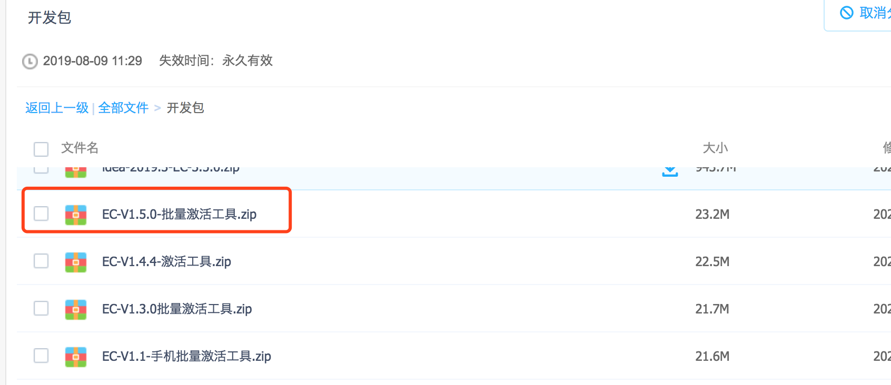
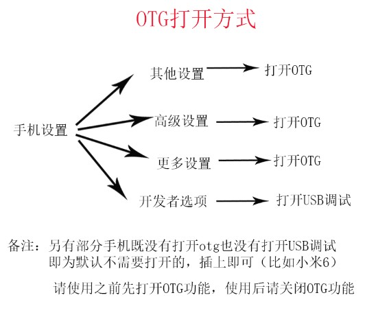
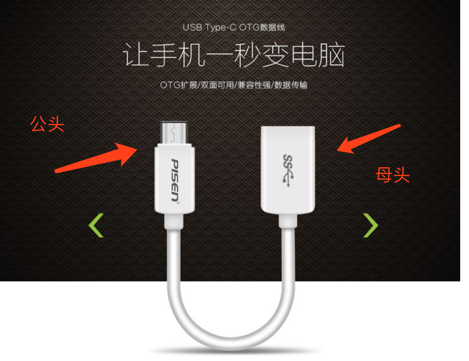
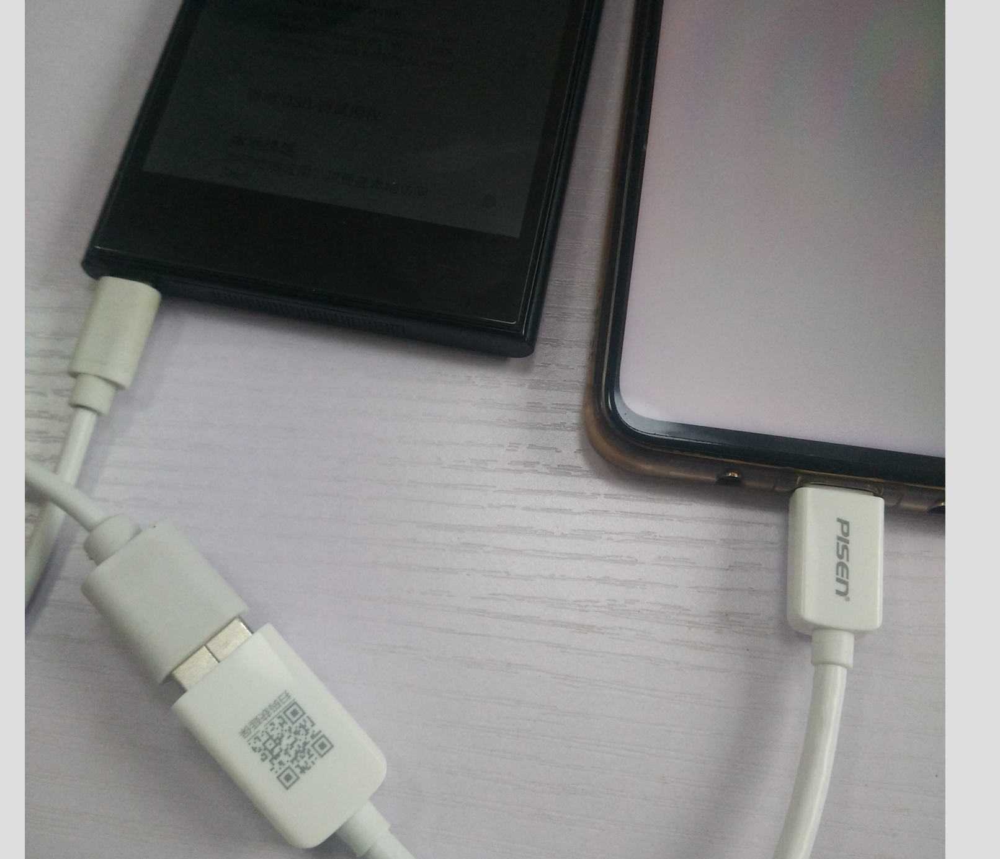
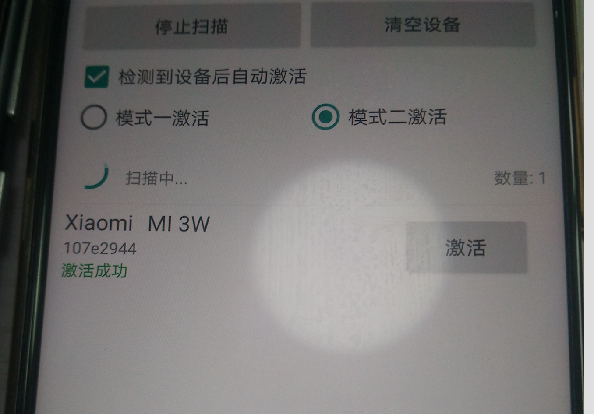

- 本章节讲述如何激活设备
1. IDEA开发工具激活
- 进入IDEA，选择EasyClick开发工具 - 激活设备 - 激活模式1或者激活模式2 点击即可
- 打开EasyClick运行日志，如果提示激活成功就可以了


2. 电脑批量激活
- 到下载EasyClick开发插件的网盘，下载批量激活工具，解压后，直接运行对应的exe程序即可

3. 脱离电脑激活
- 名词解释：激活APP安装上的手机简称为A， 被激活的手机简称为B
- 到下载EasyClick开发插件的网盘，下载激活的App
- 使用一根OTG数据线，下载激活App并安装到手机A上
- 将OTG数据线公头连接到手机A，母头连接手机B，打开激活App会自动扫描并激活
如果手机B弹出USB授权，请同意即可
3.1. 操作教程
打开OTG
认识OTG数据线

- 链接设备

如有USB调试框弹出，请运行
激活传输文件
激活成功
如果中间连接不上设备，可以拔插数据线多试一次